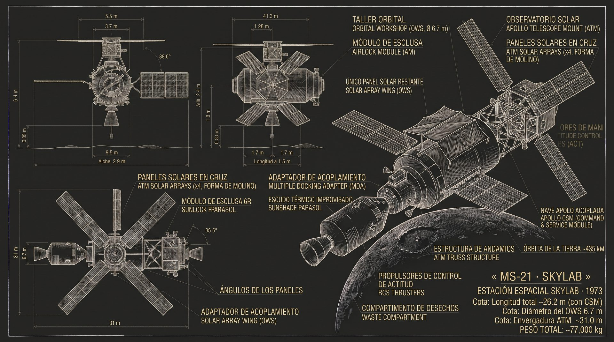

Skylab

La primera estación espacial de Estados Unidos. Nueve astronautas vivieron en ella y, cuando ya no se podía mantener arriba, cayó sobre Australia Occidental. Sus restos se exponen en museos.
Reentrada no controlada el 11 de julio de 1979; fragmentos recuperados en Australia Occidental. Personas: Pete Conrad
Lo que hizo
- Salí dañada — Al llegar a la órbita perdí un panel solar y el escudo térmico. La primera tripulación tuvo que salir a repararme con paraguas improvisados antes de poder entrar.
- Nueve personas, tres turnos — Tres tripulaciones vivieron conmigo, la última casi tres meses. Se hicieron experimentos del Sol, de la Tierra y de cómo se comporta el cuerpo humano sin peso.
- Caí sobre Australia — El 11 de julio de 1979 perdí altura y entré en la atmósfera sin control. Los trozos cayeron sobre Australia Occidental. Un pueblo de allí multó a Estados Unidos por tirar basura, y mis restos acabaron en museos.
Modelo 3D, chat y cómic, en tres idiomas
Fuentes
Ver el índice completo · Proyecto del NASA Space Apps Challenge 2026. Contenido con fuentes citadas.